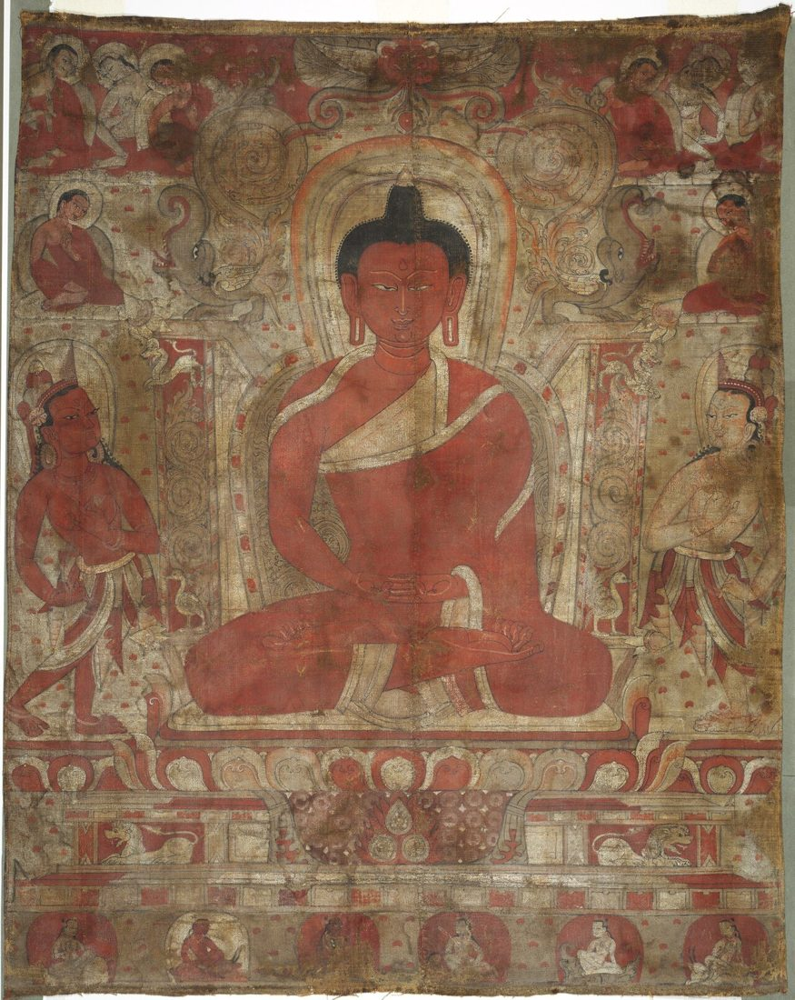
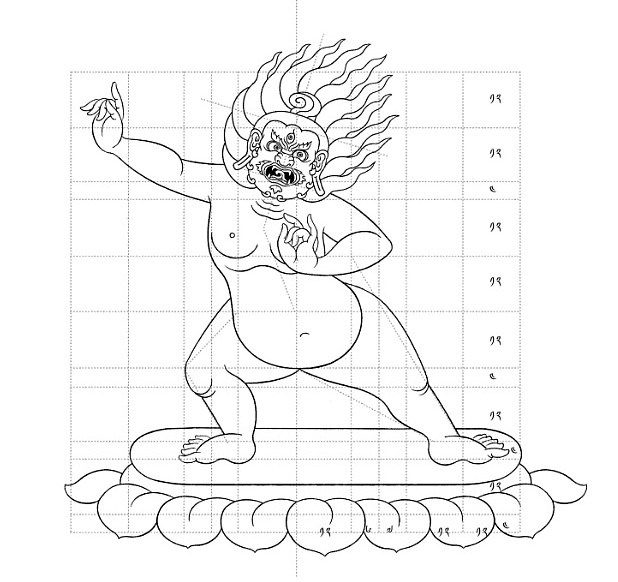

Preparing a Thangka Canvas: Cotton, Sizing, Gesso, and Burnishing
When people admire a thangka, they usually look at the deity, the colors, and the gold. Few think about the surface underneath. Yet every crisp line and every smooth gradation of color depends on a canvas that was prepared by hand before a single brushstroke of paint was applied. Traditional painters often say that a poorly prepared canvas will betray the painting, no matter how skilled the artist.
This guide focuses entirely on that first stage: what the canvas is made of, how it is stretched, how it is sized and coated, and why the final burnishing matters so much. Understanding it will change how you look at the surface of any thangka.

Choosing the Cloth
Most thangkas are painted on cotton. Painters prefer a tightly woven, even cloth without knots or thick threads, because irregularities in the weave show through later as bumps or uneven color. Historically, silk was sometimes used for prestigious commissions, and some very old paintings use linen-like plant fibers, but plain cotton has been the standard for centuries because it is strong, flexible, and takes the ground layer well.
Before use, the cloth is often washed to remove any finishing agents and to pre-shrink it, so that it will not distort once it is stretched and wetted. The painter then cuts it a little larger than the intended painting, leaving a margin for stitching and lacing.
Stretching the Canvas on Its Frames
The inner frame
The cloth is first sewn along all four sides to thin wooden or bamboo sticks, forming an inner frame. Some painters fold the edges over a cord before stitching, which spreads the tension evenly and prevents the cloth from tearing at the seams.
The outer frame and lacing
This inner frame is then set inside a larger, sturdy outer frame and laced to it with strong string, passing around both frames at regular intervals like the lacing of a drum. By tightening the lacing a little at a time, the painter can bring the canvas to an even, firm tension. Because the cloth will relax and tighten as it absorbs and loses moisture during the next stages, the lacing is adjusted repeatedly. This simple system is one reason thangka canvases stay so flat and stable.
Sizing with Hide Glue
Raw cotton is extremely absorbent. If paint were applied directly, it would soak in unevenly and spread along the fibers. To prevent this, the canvas is sized with a thin solution of animal-hide glue dissolved in warm water. The glue seals the fibers and gives the cloth a slight stiffness. It is brushed onto both sides of the canvas and allowed to dry thoroughly.
The strength of the glue matters. Too weak, and the canvas stays absorbent; too strong, and the later ground layer may crack when the painting is rolled. Experienced painters judge the mixture by feel and by how it sets on a test strip, adjusting for the weather and the season.
Applying the Gesso Ground
Once the sizing has dried, the painter prepares the ground, a mixture often compared to gesso in Western painting. It is made by combining hide glue with a fine white mineral powder, traditionally chalk, kaolin clay, or a similar white earth. The paste is thinned to a creamy consistency and spread evenly over the canvas.
Thin layers, worked in
Rather than one thick coat, the ground is usually applied in several thin layers, each worked into the weave with a flat tool or a broad brush and allowed to dry. Many painters apply the ground to both front and back, then gently scrape away excess so that the texture of the cloth is filled but not buried. The aim is a layer thick enough to give a smooth white surface, yet thin enough to stay flexible when the thangka is rolled for travel or storage.
This flexibility is essential. A thangka is meant to be rolled, and a heavy, brittle ground would crack along the roll lines over time. The balance between smoothness and suppleness is one of the quiet signs of a well-made painting, and one of the reasons good care matters later in its life, as we explain in our guide to caring for and framing a thangka.
Burnishing the Surface
When the final layer of ground is completely dry, the canvas is laid on a flat, hard surface and burnished. The painter rubs the surface with a smooth stone, a polished shell, or a piece of glass, sometimes after lightly dampening it. The pressure compresses the ground, closes tiny pores, and creates a surface with a soft, almost satin sheen.
Burnishing is slow, physical work, and it is done on both sides of the canvas in many workshops. The result is a surface that accepts fine ink lines without bleeding and allows paint to be laid down in clean, even layers. When you look closely at a well-preserved thangka and notice how sharp the outlines are, you are seeing the benefit of careful burnishing.

Testing the Canvas
Before drawing begins, painters often test the prepared canvas. They may brush a little water on a corner to see whether it beads or soaks in, or draw a few trial lines in ink to check that they stay crisp. A canvas that is too absorbent may receive another light coat of sizing; one that is too slick may be lightly re-burnished or sanded.
From Prepared Canvas to Drawing
Only now is the canvas ready for the measured drawing. The painter snaps lines for the central axis and borders and lays out the grid of proportions for the figure. On a smooth, stable ground, these lines can be drawn and erased and redrawn many times without damaging the surface. The precise geometry of peaceful buddhas and fierce protectors alike depends on this preparation; textile thangkas follow the same proportions but begin very differently, as our article on embroidered and appliqué thangkas explains.
What the Canvas Tells a Collector
- Look at the back of the painting, if you can. An evenly coated, smooth reverse suggests careful preparation.
- Examine roll lines at a low angle. Fine, even cracking can be normal with age; deep, flaking cracks may indicate a ground that was too thick or a painting rolled too tightly.
- Check the edges under the mount for signs of the original stitching or lacing holes, which can indicate traditional frame preparation.
- Notice how crisp the finest lines are. Smudged or feathered linework often points to an under-prepared surface.
Frequently Asked Questions
Why is hide glue used instead of modern binders?
Hide glue is the traditional binder, works well with mineral grounds and pigments, and remains slightly flexible. It is also reversible with care, which helps conservators.
How long does canvas preparation take?
Depending on size and weather, preparing a canvas can take from one day to several days, since each layer must dry before the next is applied.
Can a canvas be prepared in advance?
Yes. Many workshops prepare canvases in batches and store them flat until they are needed.
Do modern workshops still burnish by hand?
Many do. Hand burnishing remains common because it gives the painter direct control over the smoothness of the surface.
Conclusion
The canvas is the foundation of every thangka. Washed cotton, careful stretching, a balanced sizing, thin layers of gesso, and patient burnishing together create the smooth, flexible surface that makes fine Himalayan painting possible. The next time you stand in front of a thangka, take a moment to notice the surface itself, quiet and almost invisible, holding everything else in place.